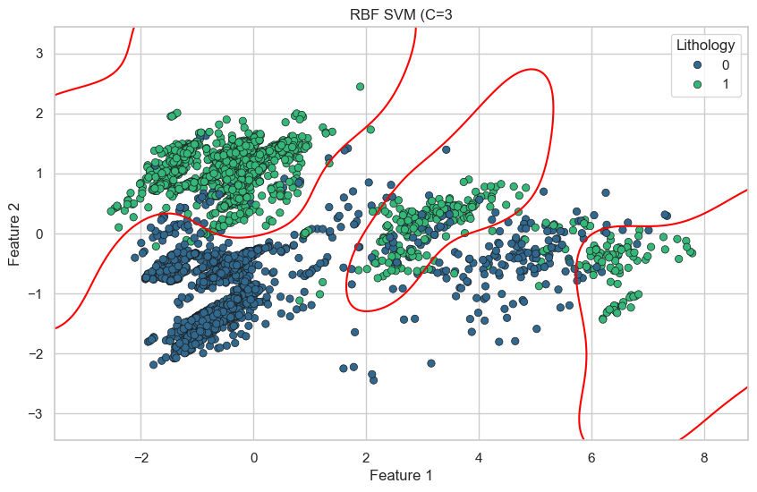
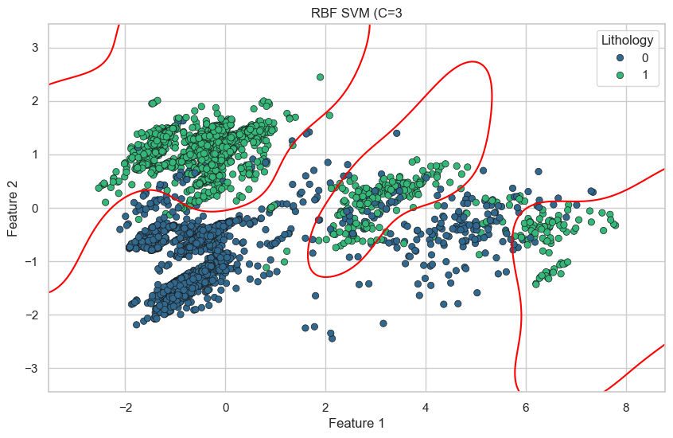

Support Vector Machines (SVM)
Overview
SVM Explanation
Support Vector Machine (SVM) is a powerful supervised learning algorithm used for both classification and regression tasks.
It is particularly effective for high-dimensional spaces and when there is a clear margin of separation between classes.
SVM attempts to find a hyperplane that best separates the data points of different classes.
For 2D data, this is a line; for 3D, a plane; and in higher dimensions, it's a hyperplane.

The SVM algorithm finds a hyperplane that passes through the feature space. (Source)
- \( w \): weight vector (normal to the hyperplane)
- \( b \): bias or offset
- \( x \): input feature vector
The goal of SVM is to maximize the margin while minimizing classification errors. For linearly separable data: $$ \min_{w, b} \frac{1}{2} \|w\|^2 \\ \text{subject to } y_i(w^T x_i + b) \geq 1 $$ This ensures that data points are on the correct side of the margin.
When data is not perfectly separable, SVM introduces slack variables \( \xi_i \) and a penalty parameter \( C \): $$ \min \frac{1}{2} \|w\|^2 + C \sum \xi_i \\ \text{subject to } y_i(w^T x_i + b) \geq 1 - \xi_i, \quad \xi_i \geq 0 $$
How the kernel works
A kernel works by computing the dot product between data points in a higher-dimensional feature space without explicitly transforming the data.
This kernel trick allows algorithms like SVM to learn non-linear decision boundaries by replacing the standard dot product with a kernel function
(e.g., polynomial or RBF), enabling complex patterns to be captured efficiently in the original input space.
Why the dot product is so critical to the use of the kernel?
The dot product is critical in SVM because both the optimization and prediction steps rely entirely on computing similarities between data points,
which are expressed as dot products. Kernel functions allow us to replace these dot products with computations in a higher-dimensional
space without explicitly transforming the data, enabling SVM to handle non-linear patterns efficiently through the kernel trick.
Examples of kernel functions. (Source)
What the polynomial and rbf kernel function look like?
For non-linear decision boundaries, SVM uses the kernel trick to implicitly map data into a higher-dimensional space:
- Linear kernel: \( K(x, x') = x^T x' \)
- Polynomial kernel: \( K(x, x') = (x^T x' + r)^d \)
- RBF (Gaussian): \( K(x, x') = \exp(-\gamma \|x - x'\|^2) \)
Why SVMs are linear separators?
SVMs are linear separators because, at their core, they find the optimal hyperplane that linearly separates data in the feature space.
Even when using non-linear kernels, the separation remains linear in the transformed (higher-dimensional) space.
The kernel trick allows SVMs to model complex boundaries in the original space by applying a linear decision function in this new space,
so the model itself is always a linear classifier in some (possibly implicit) feature space.
Dot product in the use of kernel
The dot product is fundamental in SVMs because it measures the similarity between data points.
Kernels replace the standard dot product with a function that computes this similarity in a
higher-dimensional space without explicitly transforming the data. This kernel trick
enables SVMs to handle non-linear patterns efficiently, allowing complex decision boundaries
to be modeled while maintaining computational efficiency.
Example of SVM using Polynomial kernel with \(r = 1\) and \(d = 2\).
In genernal, let \(A = (a_1, a_2)\) and \(B = (b_1, b_2)\) are two 2D points, using the Polynomial kernel: \( K(A, B) = (A^T B + r)^d \).
We have:
\[
K(A, B) = (a_1 b_1 + a_2 b_2 + 1)^2
\]
Expanding this, we get:
\[
K(A, B) = a_1^2 b_1^2 + a_2^2 b_2^2 + 2a_1 b_1 a_2 b_2 + 2a_1 b_1 + 2a_2 b_2 + 1
\]
\(K(A, B)\) can be expressed as a dot product:
\[
K(A, B) = [a_1^2, a_2^2, \sqrt{2} a_1 a_2, \sqrt{2} a_1, \sqrt{2} a_2, 1]^T [b_1^2, b_2^2, \sqrt{2} b_1 b_2, \sqrt{2} b_1, \sqrt{2} b_2, 1]
\]
Thus, the explicit feature mapping \(\phi(A)\), \(\phi(B)\) is:
\[
\phi(A) = (a_1^2, a_2^2, \sqrt{2} a_1 a_2, \sqrt{2} a_1, \sqrt{2} a_2, 1)
\]
\[
\phi(B) = (b_1^2, b_2^2, \sqrt{2} b_1 b_2, \sqrt{2} b_1, \sqrt{2} b_2, 1)
\]
This transformation goes from 2 dimensions space to 6 dimensions space.
Example: \(A = (1, 2), B = (2, 3)\).
The transformation of A is \([1, 4, 2\sqrt{2}, \sqrt{2}, 2\sqrt{2}, 1]\).
The transformation of B is \([4, 9, 6\sqrt{2}, 2\sqrt{2}, 3\sqrt{2}, 1]\)
Using transformed values to calculate \(K(A, B)\), we have:
\[
K(A, B) = [1, 4, 2\sqrt{2}, \sqrt{2}, 2\sqrt{2}, 1]^T [1, 4, 2\sqrt{2}, \sqrt{2}, 2\sqrt{2}, 1]
\]
\[
K(A, B) = 1 \times 4 + 4 \times 9 + 2\sqrt{2} \times 2\sqrt{2} + \sqrt{2} \times \sqrt{2} + 2\sqrt{2} \times 2\sqrt{2} +1 =81
\]
While the Kernel from 2D data is:
\[
K(A, B) = [(1 \times 2 + 2 \times 3) +1]^2 = 81
\]
Data Preparation
The SVMs require numerical data, so we process and clean the dataset to ensure it is suitable for modeling.
The normalization of the data is also performed to ensure that all features contribute equally to the distance calculations.
Is the train test split different or the same?
The train-test split is a crucial step in preparing the dataset for SVM modeling. It involves dividing the dataset into two separated subsets:
- Training Set: Used to train the SVM model, allowing it to learn the patterns and relationships in the data.
- Test Set: Used to evaluate the performance of the trained model on unseen data, providing an estimate of how well the model generalizes.

Train test data after splitting.
The link to dataset and preprocessing code are provided in the Deliverables section below.
Results
Data transformation
The original dataset is normalized and the label is encoded to numerical values.
Af transformation, the train test split is performed with a 80% training and 20% testing split.
The splitting result is shown in the data preparation section above.

Data transformation for SVMs.
The project is implemented using the SVM algorithm with different kernel functions, including linear, polynomial,
and radial basis function (RBF) kernels.
SVM - Linear Kernels
The settings of \(Cost\) parameter \(C\) are set to 0.1, 1.0, and 7.0. It shows an improvement in accuracy as the value of \(C\) increases,
which indicates that the model is able to fit the data better with a higher penalty for misclassification.
The highest accuracy is achieved with \(C = 7.0\) is 69%.
The Classification Report of Linear Kernel SVMs.
The Confusion Matrix of Linear Kernel SVMs.
SVM - Polynomial Kernels
The Polynomial kernel is used with different settings of degree \(d\) and constant \(r\).
The settings of \(Cost\) parameter \(C\) are set to 1, 2, and 3 and the degree \(d\) varies from 2 to 5.
The performance of the Polynomial kernel SVMs is shown below.
The highest accuracy is achieved with \(C = 3\) and \(d = 5\) is 86% indicates that
the model is able to fit the data better with a higher degree of polynomial and a higher penalty for misclassification.
It can be reasoned that the Polynomial kernel is able to capture the non-linear patterns in the data better than the Linear kernel.
The Classification Report of Polynomial Kernel SVMs.
The Confusion Matrix of Polynomial Kernel SVMs.
SVM - Radial Basis Function Kernels The Radial Basis Function (RBF) kernel is used with different settings of \(Cost\) parameter \(C\) and gamma \(\gamma\). The settings of \(Cost\) parameter \(C\) are set to 0.1, 1.0, and 3.0. The highest accuracy is achieved with \(C = 3.0\) is 86%.
The Classification Report of Radial Basis Function Kernel SVMs.
The Confusion Matrix of Radial Basis Function Kernel SVMs.
Decision Boundary of SVMs
The visualization of the decision boundary for each kernel on two variables is shown below.
 

The Decision Boundary of SVMs.
Models Comparison
The accuracies of the different settings of SVMs are compared in the figure below.
From that, the Polynomial kernel SVMs with \(C = 3\) and \(d = 5\) achieves the highest accuracy of 86%,
followed by the RBF kernel SVMs with \(C = 3\) achieving 86% as well.
Accuracies comparison of the different settings of SVM.
Conclusions
In conclusion, the SVM algorithm is a powerful tool for classification tasks, especially when dealing with high-dimensional data. The results show that the Polynomial kernel SVMs with \(C = 3\) and \(d = 5\) achieved the highest accuracy of 86%, indicating that it is able to capture the non-linear patterns in the data better than the Linear and RBF kernel SVMs. From the Classification Report and Confusion Matrix, we can see that the model is able to classify almost the data points from the majority of the classes correctly. Some failures are observed when missclassifying between Sand Stone and Sandstone Shale, which share similar physical properties.
Deliverables
For your reference, all external links are provided below: